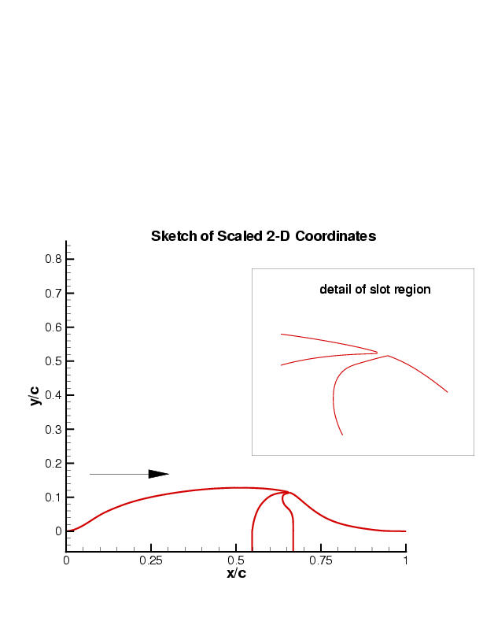
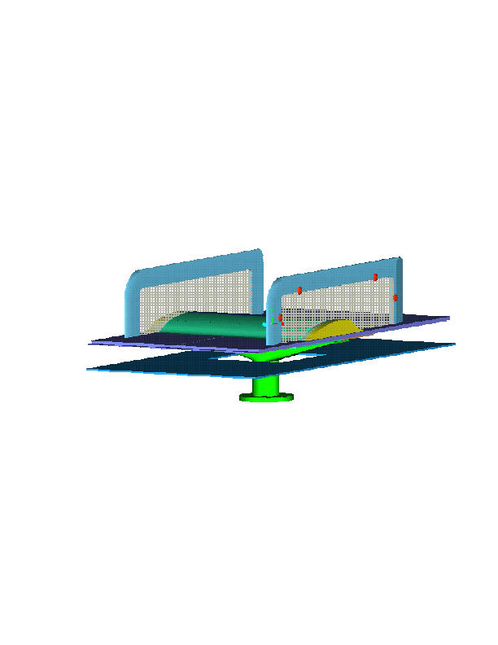
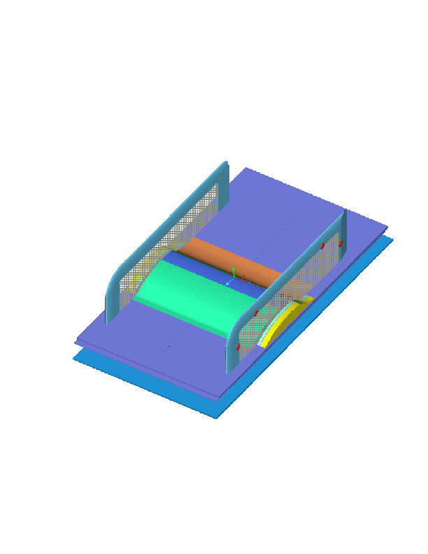
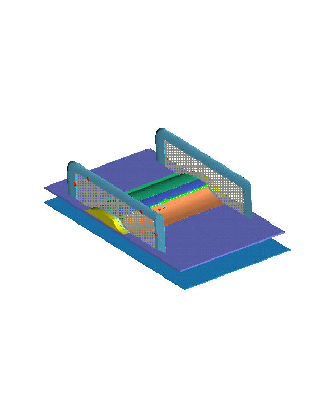
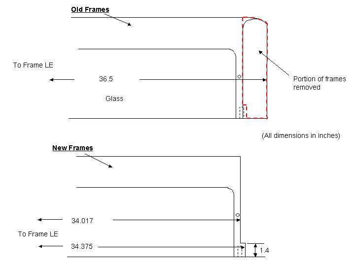

Public Access (formerly Langley Research Center)Turbulence Modeling Resource |
Exp: CFDVAL2004 Case 3 Geometry
Return to: CFDVAL2004 Case 3 - Intro Page
Return to: CFDVAL2004 - Intro Page Return to: Data from Experiments - Intro Page Return to: Turbulence Modeling Resource Home Page
    This is a nominally two-dimensional experiment, although there will be
side-wall effects (3-D flow) near the end-plates. The tunnel dimensions
at the test section are 28 inches wide by 15.032 inches high
(distance from the splitter plate to the top wall).
The model itself spans almost the entire 28-inch tunnel
(it is not sealed at the walls), but two endplates
are attached to the model, 23 inches apart. The boundary-layer-control
slot is located only over the 23-inch hump section between the endplates.
Each endplate is approximately 0.5 inch thick,
9.25 inches high, and 34 inches long (see Special Note below).
Each endplate has an elliptical-shaped leading edge, at
an x-location of 8.48 inches upstream of the start of the hump.
The following links point to five Case 3 geometry-related items: (1) a CAD file
in IGES format, (2) a tar file containing CAD files in ProE (ProEngineer 2001) format,
(3) a tar file containing comparisons between the theoretical geometry and
the actual (QA) geometry, (4) 2-D Hump coordinates (in inches), and
(5) nondimensionalized 2-D Hump coordinates (scaled so that chordlength=1):
Note that the IGES file does not include the parts of the hump
outside of the end-plates (the yellow parts in the figures above). These outside
parts are the same hump shape, but there is no slot present for suction/blowing
(the slot has been faired over). Note also that the geometry information is based on theoretical (planned,
blueprint-type) specifications. The QA data is given to
show differences between the theoretical and as-built configurations.
Also, this geometry (specifically the chamber and pipe beneath the
splitter-plate floor of the hump model) is used for the suction and no-flow cases. The
oscillatory suction/blowing case(s) will use a 2D piston-like
actuator, to be described at some point in the future.
SPECIAL NOTE: Due to limited optical access, it was necessary to modify the downstream
portion of the end-plates (by removing some of the frame). This modification,
made to both of the end-plates, is illustrated in the following figure. This
change is not reflected in any of the other figures above or in
the geometry files. 
Return to: CFDVAL2004 Case 3 - Intro Page
IGES FILE (274 Kb)
PRO-E FILES (tarred, gzipped) (8.4 Mb)
QA COMPARISONS (tarred, gzipped) (1.1 Mb)
2-D COORDINATES (57 Kb)
SCALED 2-D COORDINATES (64 Kb)
Page Curators: Christopher Rumsey,
Ethan Vogel,
Clark Pederson
Last Updated: 05/15/2021